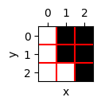
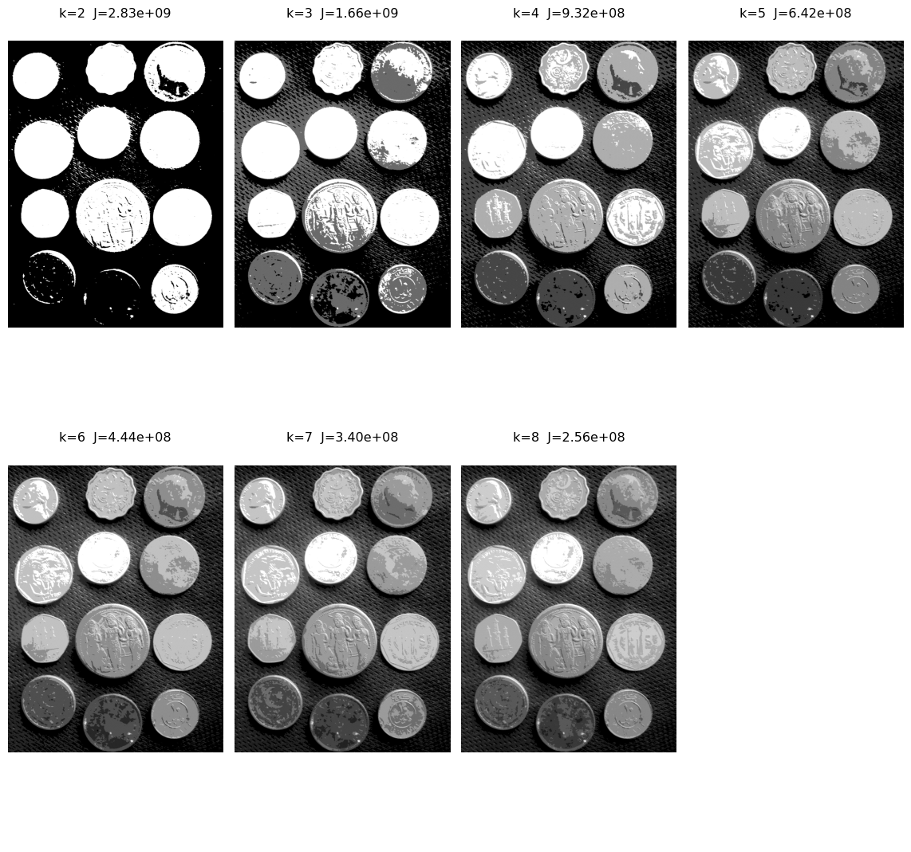
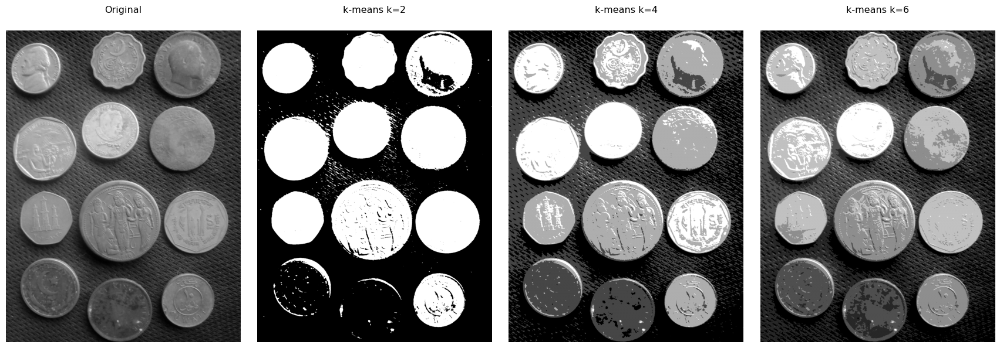

Este capítulo apresenta dois temas fundamentais do Processamento Digital de Imagens (PDI): a morfologia matemática e a segmentação de imagens. A morfologia matemática fornece um framework baseado na teoria dos conjuntos para analisar, refinar e quantificar a forma de objetos em imagens binárias e em tons de cinza, a partir de operadores fundamentais como erosão e dilatação. A segmentação, por sua vez, tem como objetivo particionar a imagem em regiões semanticamente relevantes, separando objetos do fundo e identificando estruturas de interesse.
O capítulo inicia com a limiarização, uma das técnicas mais simples e importantes de segmentação, introduzindo o método automático de Otsu e a análise do histograma por meio da variância interclasses, apresentada inicialmente no primeiro capítulo. Em seguida, são apresentados os principais operadores da morfologia matemática, com destaque para pipelines de limpeza binária que combinam preenchimento de regiões, erosão e dilatação. Por fim, técnicas mais avançadas de segmentação, como o algoritmo da transformada de distância, watershed e o agrupamento por k-means, ampliam a caixa de ferramentas para separação e análise de objetos em imagens.
4.1 Objetivos
Ao final deste capítulo, você será capaz de:
Aplicar limiarização: Formalizar o critério automático de Otsu (\(\sigma_B^2\)) e escolher o melhor pré-processamento por análise do histograma;
Dominar morfologia binária: Compreender e aplicar erosão (\(A\ominus B\)) e dilatação (\(A\oplus B\)) como primitivos, derivando abertura, fechamento, mm.clohole, mm.edgeoff e reconstrução morfológica;
Aplicar morfologia em tons de cinza: Gradiente morfológico e top-hat transform para realce e extração de estruturas;
Segmentar por regiões: Construir o pipelinewatershed completo com transformada de distância e marcadores;
Segmentar por agrupamento: Utilizar k-means com o método do cotovelo para escolha de \(k\);
Extrair descritores de forma: Área, perímetro, circularidade, excentricidade e momentos de Hu via cv2.findContours.
import os, importlib, urllib.requestimport numpy as npimport matplotlib.pyplot as pltimport cv2from scipy import ndimageBASE_URL ="https://raw.githubusercontent.com/fzampirolli/pdi-vc/master/morph"for f in ["morph.py"]:ifnot os.path.exists(f): urllib.request.urlretrieve(f"{BASE_URL}/{f}", f)import morphimportlib.reload(morph)from morph import mmprint("✅ Ambiente pronto")
✅ Ambiente pronto
4.2 Limiarização
A limiarização (thresholding) é uma das formas mais simples e eficientes de segmentação de imagens. Seu objetivo é classificar cada pixel como pertencente ao objeto ou ao fundo a partir de um valor limiar \(T\):
em que \(f(x,y)\) representa a intensidade do pixel na imagem original e \(g(x,y)\) a imagem binária resultante.
A escolha do limiar \(T\) é fundamental para a qualidade da segmentação. O método de Otsu determina automaticamente o limiar ótimo ao maximizar a variância interclasses\(\sigma_B^2\), definida por:
\(w_0(T)\) e \(w_1(T)\) são as probabilidades acumuladas das classes fundo e objeto;
\(\mu_0(T)\) e \(\mu_1(T)\) são as médias de intensidade dessas classes;
\(\sigma_B^2(T)\) representa a variância interclasses para um dado limiar \(T\).
O método avalia todos os níveis de intensidade possíveis da imagem — tipicamente \([0,255]\) para imagens de 8 bits — e seleciona o limiar que maximiza \(\sigma_B^2\):
O método de Otsu produz melhores resultados quando o histograma apresenta dois picos bem definidos (bimodalidade), correspondentes ao fundo e ao objeto. Quanto maior a separação entre esses picos e mais pronunciado o máximo de \(\sigma_B^2\), mais confiável tende a ser o limiar obtido.
Em imagens com iluminação não uniforme ou múltiplas regiões de intensidade, técnicas de limiarização adaptativa — nas quais o limiar é calculado localmente — costumam produzir segmentações mais robustas.
O índice \(B\) em \(\sigma_B^2\) significa between classes (entre classes). Assim, \(\sigma_B^2\) representa a variância entre as classes (between-class variance).
4.2.1 Imagem de Moedas
A imagem utilizada para praticar a segmentação é uma fotografia de coleção de moedas de diferentes países e épocas (Figura 4.1). Crédito: GAZI.MD.AHAD (CC BY-SA 4.0). Ela apresenta objetos circulares com bordas bem definidas, sendo ideal para demonstrar limiarização, operadores morfológicos, transformada de distância, watershed e descritores de forma.
Figura 4.1: Imagem com moedas de vários tipos. Crédito: GAZI.MD.AHAD (CC BY-SA 4.0).
4.2.2 Escolha do Pré-processamento para o Otsu
A qualidade do Otsu depende diretamente de quão bimodal é o histograma da imagem de entrada. A imagem original de moedas tem iluminação não uniforme e moedas escuras (cobre oxidado) próximas em intensidade ao fundo escuro, tornando o histograma pouco bimodal.
Para corrigir isso, avaliamos dois pré-processamentos clássicos:
Técnica
O que faz
Quando usar
CLAHE
Equalização de histograma adaptativa local
Baixo contraste global ou regional
Gaussiano
Suavização por convolução com gaussiana
Ruído de alta frequência (textura do fundo)
A função cv2.createCLAHE(clipLimit, tileGridSize) divide a imagem em blocos e aplica equalização de histograma em cada um, limitando o amplificação de ruído pelo parâmetro clipLimit. O filtro Gaussiano (cv2.GaussianBlur) suaviza texturas finas que poderiam criar falsos picos no histograma.
Para comparar objetivamente qual pré-processamento gera melhor entrada para o Otsu, plotamos para cada versão: a imagem, o histograma com \(T^*\) marcado, a curva \(\sigma_B^2(T)\) e o resultado da binarização.
NotaCritério de comparação
A versão com maior valor de \(\sigma_B^2\) no pico é a que oferece melhor separação bimodal — e portanto a melhor entrada para o Otsu.
Figura 4.2: Comparação dos pré-processamentos: imagem | histograma+T* | σ²B(T) | Otsu. A melhor separação bimodal indica o limiar mais confiável.
4.2.3 Resultado: CLAHE como Melhor Pré-processamento
A análise da Figura 4.2 mostra que o CLAHE produz a maior separação bimodal (\(\sigma_B^2 \approx 2{,}47 \times 10^3\), \(T^* = 122\)), superando até mesmo a combinação CLAHE+Gaussiano. O filtro Gaussiano, embora suavize ruídos de textura, reduz levemente a separação inter-classe ao homogeneizar intensidades próximas ao limiar.
Portanto, o pipeline de segmentação adota apenas o CLAHE como pré-processamento, simplificando o capítulo sem perda de qualidade.
DicaInterpretação visual
No histograma do CLAHE, observe o vale profundo em torno de \(T^* = 122\), separando claramente dois grupos: pixels de fundo (intensidades baixas) e pixels de moedas (intensidades altas). Na curva \(\sigma_B^2(T)\), o pico alto e estreito confirma que esse limiar é robusto.
4.2.4 Critério de Otsu em Detalhe
Para consolidar a compreensão do critério, visualizamos explicitamente a curva \(\sigma_B^2(T)\) para a imagem com CLAHE, identificando o máximo e comparando o resultado com a binarização adaptativa.
Figura 4.3: Critério de Otsu sobre imagem com CLAHE: histograma com T* marcado (esquerda) e variância inter-classe σ²B em função de T (direita). O pico alto e estreito confirma a boa separação bimodal.
4.3 Morfologia Matemática
A morfologia matemática é um framework baseado na teoria dos conjuntos que analisa a forma e a estrutura dos objetos em imagens. Diferente dos filtros lineares (cap. 3), os operadores morfológicos são não lineares e operam comparando a vizinhança de cada pixel com um elemento estruturante\(B\) — uma máscara que define a forma e o tamanho da região de interesse.
A morfologia foi originalmente desenvolvida para imagens binárias por Matheron e Serra na década de 1960 e depois estendida para tons de cinza. Todos os operadores — gradiente morfológico, top-hat, watershed, transformada de distância — derivam de apenas dois primitivos: erosão e dilatação.
4.3.1 Erosão e Dilatação Binárias
Para imagens binárias (\(f : \Omega \to \{0,1\}\)), os operadores são definidos como:
Erosão de \(A\) pelo elemento estruturante \(B\): \[
A \ominus B = \{z \mid B_z \subseteq A\}
\tag{4.3}\]
O pixel \(z\) pertence à erosão se o elemento estruturante centrado em \(z\) está completamente contido em \(A\). Efeito: encolhe objetos, elimina protuberâncias menores que \(B\).
Dilatação de \(A\) pelo elemento estruturante \(B\): \[
A \oplus B = \{z \mid \hat{B}_z \cap A \neq \emptyset\}
\tag{4.4}\]
O pixel \(z\) pertence à dilatação se o elemento estruturante refletido (\(\hat{B}\)) centrado em \(z\)toca\(A\). Efeito: expande objetos, preenche lacunas menores que \(B\).
NotaDualidade erosão–dilatação
Erosão e dilatação são duais pelo complemento: \[
(A \ominus B)^c = A^c \oplus \hat{B}
\] Erode o objeto equivale a dilatar o fundo. Na morph.py, as versões didáticas mm.ero0 e mm.dil0 expõem esse mecanismo com laços explícitos, enquanto mm.ero e mm.dil delegam ao OpenCV para eficiência.
Para ilustrar numericamente, criamos na Figura 4.4 uma imagem binária 7×7 em forma de losango e aplicamos os operadores passo a passo:
Figura 4.4: Erosão e dilatação em imagem binária 7×7 com elemento estruturante em cruz 3×3: mm.ero0 (laços didáticos) e mm.dil0 mostram o mecanismo explicitamente; mm.ero e mm.dil confirmam o resultado via OpenCV.
mm.drawImageKernel(img7 //255, B_cruz, x=1, y=1)

4.3.2 Abertura e Fechamento
Combinando erosão e dilatação obtêm-se dois operadores de grande utilidade prática:
Abertura (opening) — erosão seguida de dilatação: \[
A \circ B = (A \ominus B) \oplus B
\tag{4.5}\]
Fechamento (closing) — dilatação seguida de erosão: \[
A \bullet B = (A \oplus B) \ominus B
\tag{4.6}\]
Tabela 4.1: Propriedades de abertura e fechamento.
Operador
Sequência
Efeito principal
Abertura \(A \circ B\)
erosão → dilatação
Remove objetos menores que \(B\); suaviza contornos externos
Fechamento \(A \bullet B\)
dilatação → erosão
Preenche buracos menores que \(B\); suaviza contornos internos
Propriedade importante: ambos são idempotentes — \((A \circ B) \circ B = A \circ B\) — aplicar o operador duas vezes produz o mesmo resultado que uma vez.
Figura 4.5: Abertura (remove ruído externo) e fechamento (preenche buracos internos) aplicados à binarização Otsu das moedas com CLAHE. Elemento estruturante: disco 13×13.
4.3.3 Reconstrução Morfológica
A reconstrução morfológica é uma operação iterativa que propaga uma imagem marcador\(f\) dentro de uma imagem máscara\(g\), garantindo que o resultado nunca ultrapasse \(g\). A inf-reconstrução itera até convergência:
\[
R_g^D(f) = D_g^{(k)}(f), \quad \text{onde } D_g^{(1)}(f) = (f \oplus B) \wedge g
\tag{4.7}\]
A operação repete \(D_g^{(n)}(f) = (D_g^{(n-1)}(f) \oplus B) \wedge g\) até que não haja mais mudança. Em morph.py:
mm.infrec(f, g, b) # dilata f dentro de g até convergir
A reconstrução morfológica é mais poderosa que a abertura simples porque remove objetos sem alterar a forma dos que são mantidos — a abertura pode deformar contornos, a reconstrução os preserva exatamente.
4.3.4 Preenchimento de Buracos e Remoção de Bordas
Dois operadores baseados em reconstrução morfológica completam o pipeline de limpeza binária:
Preenchimento de buracos (mm.clohole) fecha qualquer buraco completamente cercado pelo objeto — independentemente do tamanho — sem alterar os contornos externos:
Remoção de objetos de borda (mm.edgeoff) elimina todos os objetos que tocam a borda da imagem, preservando apenas os completamente internos:
\[
\text{edgeoff}(f) = f - R_f^D(\text{frame})
\tag{4.9}\]
NotaComparação dos dois operadores
Operador
Marcador
Máscara
Remove
mm.clohole
borda de \(\bar{f}\)
\(\bar{f}\)
Buracos internos (preenchendo-os)
mm.edgeoff
borda de \(f\)
\(f\)
Objetos que tocam a borda
4.3.5 Comparação do clohole nos Pré-processamentos
Antes de construir o pipeline final, verificamos o efeito do mm.clohole nas três versões de pré-processamento. O preenchimento de buracos é o indicador mais direto de quais moedas foram corretamente binarizadas — moedas com interior não preenchido indicam falha na separação fundo/objeto.
Figura 4.6: Comparação do clohole após Otsu em cada pré-processamento. Discos completamente preenchidos indicam boa binarização das moedas.
4.3.6 Pipeline de Limpeza Binária com CLAHE
Com base na análise anterior — CLAHE produz a melhor separação bimodal (\(\sigma_B^2 \approx 2{,}47 \times 10^3\)) e o clohole preenche satisfatoriamente as moedas —, o pipeline final de segmentação é:
Após o mm.clohole, aplica-se uma erosão seguida de dilatação com kernel grande para eliminar resíduos de fundo que o clohole pode incorporar ao preencher regiões próximas à borda. Essa sequência é análoga a uma abertura, mas com ênfase na remoção de falsas regiões geradas pelo preenchimento.
DicaPor que erosão+dilatação após clohole?
O mm.clohole preenche todos os buracos fechados, incluindo eventuais artefatos do fundo que foram fechados acidentalmente. A erosão com kernel grande remove esses objetos espúrios (menores que o kernel), e a dilatação restaura o tamanho das moedas genuínas.
#img_coins_gray0 = img_coins_gray[:1920, :]# ── Pré-processamento: apenas CLAHE ──────────────────────────────────────────clahe_op = cv2.createCLAHE(clipLimit=2.0, tileGridSize=(8, 8))img_clahe0 = clahe_op.apply(img_coins_gray)# ── Etapa 1: Binarização Otsu ────────────────────────────────────────────────img_bin = mm.threshold(img_clahe0)# ── Etapa 2: Fechamento — remove ruído externo fino ──────────────────────────B_small = mm.sedisk(5)img_close = mm.close(img_bin, B_small)# ── Etapa 3: clohole — fecha todos os buracos internos ───────────────────────img_hole = mm.clohole(img_close)# ── Etapa 4: Erosão + Dilatação (kernel grande) — remove ruídos de fundo ─────# A erosão elimina objetos espúrios criados pelo clohole; a dilatação# restaura o tamanho das moedas genuínas.B_limpeza = mm.sedisk(77)img_limpo = mm.open(img_hole, B_limpeza)# ── Etapa 6: edgeoff — remove objetos que tocam a borda ──────────────────────img_final = mm.edgeoff(img_limpo)mm.show( [img_clahe0, img_bin, img_close, img_hole, img_limpo, img_final], titles=["CLAHE", "Otsu (T*=122)", "Fechamento (raio=5)","clohole (exato)", "Ero+Dil (raio=38)", "Final (edgeoff)"], cols=3, rows=2, figsize=(12, 8))
Figura 4.7: Pipeline completo de segmentação com CLAHE: Otsu → fechamento → clohole → erosão+dilatação (remoção de ruído) → abertura → edgeoff.
4.3.7 Morfologia em Tons de Cinza
Os operadores morfológicos se estendem para imagens em tons de cinza substituindo as operações de conjunto por mínimo (erosão) e máximo (dilatação):
Figura 4.8: Morfologia em tons de cinza aplicada à imagem Lena: erosão (escurece), dilatação (clareia), gradiente morfológico (bordas), top-hat (detalhes brilhantes) e black-hat (detalhes escuros).
4.4 Extração de Componentes e Descritores de Forma
Após a segmentação e o refinamento morfológico, o próximo passo é rotular cada região conectada e extrair suas propriedades. Um componente conexo é um conjunto máximo de pixels brancos mutuamente conectados (4- ou 8-conectividade). A função cv2.connectedComponentsWithStats retorna, para cada componente: área, posição do bounding box e centróide.
A Figura 4.9 demonstra a extração na imagem de moedas, com métricas para cada objeto:
n, labels, stats, centroids = cv2.connectedComponentsWithStats( img_final, connectivity=8)# ── Coloração dos componentes ────────────────────────────────────────────────np.random.seed(42)colors = np.random.randint(50, 255, (n, 3), dtype=np.uint8)colors[0] = [0, 0, 0]img_colored = colors[labels]img_annotated = img_colored.copy()print(f"Componentes detectados (excluindo fundo): {n-1}")print(f"\n ID Area cx cy w h")print("-"*42)for i inrange(1, n): area = stats[i, cv2.CC_STAT_AREA] cx =int(centroids[i, 0]) cy =int(centroids[i, 1]) w = stats[i, cv2.CC_STAT_WIDTH] h = stats[i, cv2.CC_STAT_HEIGHT]print(f"{i:>4}{area:>8}{cx:>6}{cy:>6}{w:>6}{h:>6}")# Contorno preto para contraste cv2.putText( img_annotated,str(area), (cx -50, cy +18), cv2.FONT_HERSHEY_SIMPLEX,2.0, (0, 0, 0),10, cv2.LINE_AA )# Texto vermelho principal cv2.putText( img_annotated,str(area), (cx -50, cy +18), cv2.FONT_HERSHEY_SIMPLEX,2.0, (255, 0, 0), # vermelho em RGB5, cv2.LINE_AA )mm.show( [ img_coins_gray, img_final, img_colored, img_annotated ], titles=["Original (crop)","Segmentação Final","Componentes Conexos","Áreas Anotadas" ], cols=4, figsize=(18, 6))
Figura 4.9: Componentes conexos extraídos após o pipeline CLAHE → Otsu → limpeza morfológica. Cada objeto é colorido com cor distinta e anotado com sua área em pixels.
4.4.1 Descritores de Forma
Para cada componente conexo, calculamos descritores de forma que caracterizam geometricamente o objeto:
Tabela 4.2: Descritores de forma clássicos.
Descritor
Fórmula
Interpretação
Área
\(A = \sum_{(x,y)\in R} 1\)
Número de pixels
Perímetro
$P = $ comprimento do contorno
Pixels de borda
Circularidade
\(C = 4\pi A / P^2\)
\(C=1\) para círculo perfeito
Excentricidade
\(e = \sqrt{1-(b/a)^2}\)
\(e=0\) circular, \(e\to1\) alongado
Momentos de Hu
\(\phi_1 \ldots \phi_7\)
Invariantes a rot./escala/transl.
A Figura 4.10 calcula esses descritores para cada moeda detectada:
contornos, _ = cv2.findContours(img_final, cv2.RETR_EXTERNAL, cv2.CHAIN_APPROX_SIMPLE)img_desc = cv2.cvtColor(img_coins_gray, cv2.COLOR_GRAY2BGR)print(f" ID Area Perimetro Circular. Excentr.")print("-"*50)for i, cnt inenumerate(contornos): area = cv2.contourArea(cnt)if area <500: continue perim = cv2.arcLength(cnt, True) circ =4* np.pi * area / (perim**2) if perim >0else0 M = cv2.moments(cnt) cx =int(M["m10"]/M["m00"]) if M["m00"] >0else0 cy =int(M["m01"]/M["m00"]) if M["m00"] >0else0 ecc =0.0iflen(cnt) >=5: (_, _), (ma, mi), _ = cv2.fitEllipse(cnt) ecc = np.sqrt(1- (min(ma,mi)/max(ma,mi))**2) ifmax(ma,mi) >0else0print(f"{i+1:>4}{area:>8.0f}{perim:>10.1f}{circ:>10.3f}{ecc:>10.3f}") color = (0,200,0) if circ >0.7else (0,0,200) cv2.drawContours(img_desc, [cnt], -1, color, 2) cv2.putText(img_desc, f"{circ:.2f}", (cx-20, cy), cv2.FONT_HERSHEY_SIMPLEX, 0.4, (255,255,0), 1)mm.show( [img_coins_gray, mm.gray(img_desc)], titles=["Original (crop)", "Circularidade (verde≥0.7, vermelho<0.7)"], cols=2)
Figura 4.10: Descritores de forma: circularidade anotada em cada moeda (verde ≥ 0.7 indica forma circular; vermelho < 0.7 indica oclusão ou forma irregular).
4.5 Segmentação de Imagens
A segmentação é o processo de particionar uma imagem em regiões ou objetos distintos. É a ponte entre o processamento de baixo nível (pixels, filtros) e a análise de alto nível (reconhecimento, medição). Formalmente, busca-se uma partição \(\{R_1, R_2, \ldots, R_n\}\) tal que:
onde \(\Omega\) é o domínio completo da imagem. Cada região \(R_i\) deve ser homogênea segundo algum critério (intensidade, cor, textura) e diferente das regiões vizinhas.
Tabela 4.3: Famílias de algoritmos de segmentação.
Abordagem
Critério
Exemplos
Limiarização
Intensidade global ou local
Otsu, adaptativa
Baseada em regiões
Homogeneidade espacial
Crescimento, watershed
Agrupamento
Similaridade em espaço de features
k-means, GMM
4.5.1 Segmentação por Watershed
O algoritmo watershed (divisor de águas) trata a imagem como um relevo topográfico: pixels de alta intensidade são picos, de baixa intensidade são vales. A simulação de inundação progressiva — com marcadores que definem as bacias — separa objetos sobrepostos que a limiarização simples não consegue distinguir.
Tabela 4.4: Pipeline do algoritmo watershed.
Etapa
Operação
Função
1
Pré-processamento
Gaussiano + Otsu
2
Remoção de ruído
Abertura morfológica
3
Fundo certo
Dilatação da máscara
4
Frente objeto
Transformada de distância + limiar
5
Região incerta
Fundo − Frente
6
Marcadores
Componentes conexos da frente
7
Watershed
cv2.watershed
A Figura 4.11 demonstra o pipeline completo na imagem de moedas:
Figura 4.11: Pipeline watershed para separação de moedas sobrepostas: da segmentação morfológica (img_final) até os contornos finais anotados sobre a imagem original.
4.5.2 Segmentação por K-Means
O k-means agrupa pixels em \(k\)clusters minimizando a inércia (soma das distâncias quadráticas intra-cluster):
O algoritmo itera entre dois passos até convergência: (1) atribuição — cada pixel ao centróide mais próximo; (2) atualização — cada centróide recalculado como média dos pixels atribuídos. A escolha de \(k\) é auxiliada pelo método do cotovelo: plota-se \(J\) em função de \(k\) e identifica-se o ponto de inflexão onde o ganho adicional de qualidade diminui.
pixels = img_coins_gray.reshape(-1, 1).astype(np.float32)inercias = []ks =list(range(2, 9))resultados = [] # guarda (labels, centers) para reusar no mm.showfor k in ks: criteria = (cv2.TERM_CRITERIA_EPS + cv2.TERM_CRITERIA_MAX_ITER, 100, 0.2) _, labels, centers = cv2.kmeans(pixels, k, None, criteria, 5, cv2.KMEANS_RANDOM_CENTERS)# inércia: distância de cada pixel ao centróide atribuído dists = (pixels - centers[labels.flatten()])**2 inercias.append(float(dists.sum())) resultados.append((labels, centers))imgs, titles = [], []for k, inercia, (labels, centers) inzip(ks, inercias, resultados): seg = centers[labels.flatten()].reshape(img_coins_gray.shape).astype(np.uint8) imgs += [seg] titles += [f"k={k} J={inercia:.2e}"]mm.show(imgs, titles=titles, cols=4, rows=2, figsize=(16, 8))

Figura 4.12: Método do cotovelo: inércia J em função de k para a imagem de moedas. O ponto de inflexão sugere o k ótimo.
def kmeans_seg(img, k): pixels = img.reshape(-1,1).astype(np.float32) criteria = (cv2.TERM_CRITERIA_EPS + cv2.TERM_CRITERIA_MAX_ITER, 100, 0.2) _, labels, centers = cv2.kmeans(pixels, k, None, criteria, 5, cv2.KMEANS_RANDOM_CENTERS)return centers[labels.flatten()].reshape(img.shape).astype(np.uint8)imgs_km = [img_coins_gray] + [kmeans_seg(img_coins_gray, k) for k in [2, 4, 6]]titles_km = ["Original"] + [f"k-means k={k}"for k in [2, 4, 6]]mm.show(imgs_km, titles=titles_km, cols=4)

Figura 4.13: Segmentação k-means da imagem das moedas com k=2, 4 e 6 clusters. Cada região é preenchida com a intensidade média do seu centróide.
4.6 Aplicação Prática: Pipeline Completo de Contagem
Reunindo as técnicas do capítulo em um pipeline de contagem automática de moedas, problema clássico em controle de qualidade industrial e visão robótica.
NotaAvaliação: IoU (Intersection over Union)
Para avaliar a qualidade da segmentação com máscara de referência (ground truth): \[
\text{IoU} = \frac{|A \cap B|}{|A \cup B|}
\tag{4.16}\] onde \(A\) é a segmentação obtida e \(B\) é a referência. \(\text{IoU} = 1\) indica segmentação perfeita. Para múltiplos objetos, usa-se \(\text{IoU} \geq 0.5\) como critério de detecção correta.
4.7 Resumo
Neste capítulo foram apresentadas as técnicas de segmentação e morfologia matemática, fechando o ciclo do PDI no domínio espacial:
Otsu e pré-processamento: o CLAHE produz a melhor separação bimodal (\(\sigma_B^2 \approx 2{,}47 \times 10^3\), \(T^* = 122\)) para a imagem de moedas, dispensando o filtro Gaussiano e simplificando o pipeline.
Erosão e dilatação: operadores morfológicos fundamentais baseados em mínimo/máximo local com elemento estruturante \(B\); duais pelo complemento; implementados em mm.ero e mm.dil.
Abertura e fechamento: composições erosão→dilatação e dilatação→erosão, idempotentes; removem ruído estrutural e preenchem lacunas, respectivamente.
Reconstrução morfológica: operação iterativa que propaga marcador dentro de máscara; base do mm.clohole e mm.edgeoff.
Pipeline de limpeza binária: CLAHE → Otsu → fechamento → mm.clohole → erosão+dilatação (remoção de ruído de fundo) → abertura → mm.edgeoff.
Morfologia em tons de cinza: extensão com mínimo/máximo ponderado; gradiente morfológico e top-hat para extração de bordas e detalhes brilhantes.
Componentes conexos e descritores: rotulagem com cv2.connectedComponentsWithStats; descritores de forma (área, perímetro, circularidade, excentricidade, momentos de Hu).
Watershed e k-means: algoritmos complementares para segmentação de objetos sobrepostos e agrupamento por intensidade.
O Capítulo 5 abordará o domínio da frequência (Transformada de Fourier, filtragem espectral) e os fundamentos de compressão de imagens (DCT, JPEG, wavelets).
4.8 🤖 Uso do NotebookLM como Tutor Complementar
Nesta edição, incentivamos o uso do NotebookLM como ferramenta complementar de aprendizagem. Essa ferramenta de IA utiliza exclusivamente os documentos fornecidos pelo autor como base de conhecimento, garantindo respostas coerentes com o conteúdo do livro.
(10%) Implemente manualmente o critério de Otsu sem usar cv2.threshold: calcule \(\sigma_B^2(T)\) para todos os \(T \in [0,255]\) usando mm.hist, identifique \(T^*\) e compare com o valor do OpenCV. Plote \(\sigma_B^2\) em função de \(T\) e marque o máximo.
(15%) Aplique limiarização adaptativa com blocos de tamanho 11, 31 e 51 à imagem Lena com gradiente de iluminação simulado (np.linspace adicionado à imagem). Compare visualmente com Otsu global e explique por que a adaptativa é superior nesse cenário.
(15%) Execute o pipeline watershed na imagem de moedas variando o limiar da transformada de distância (\(0.3\), \(0.5\), \(0.7\) × máximo). Explique como esse parâmetro afeta a separação de objetos sobrepostos e a criação de sobre-segmentação.
(15%) Usando mm.drawImage e mm.drawImageKernel, crie uma demonstração visual passo a passo da erosão de uma imagem binária 7×7 com elemento estruturante 3×3 quadrado — mostrando para cada pixel central se o elemento estruturante está completamente contido em \(A\) ou não.
(15%) Demonstre a dualidade erosão–dilatação experimentalmente com mm.ero, mm.dil e mm.bnot: verifique que \((A \ominus B)^c = A^c \oplus \hat{B}\). Calcule a diferença pixel a pixel entre os dois lados e exiba com mm.histImg.
(15%) Implemente o gradiente morfológico manualmente usando mm.ero e mm.dil e compare com cv2.morphologyEx(img, cv2.MORPH_GRADIENT, B). Aplique com elementos estruturantes de forma e tamanho diferentes (quadrado 3×3, disco 5×5, linha 1×9) e explique as diferenças na resposta de bordas.
(15%) Construa um pipeline completo para contar e classificar as moedas por tamanho (pequena, média, grande) usando área e circularidade como critérios. Calcule o IoU entre sua segmentação e uma máscara de referência criada manualmente. Apresente os resultados em tabela e com mm.show em grade.
Referências do Capítulo
A fundamentação teórica deste capítulo baseia-se nas seguintes obras:
Gonzalez; Woods (2018) para os conceitos de segmentação, limiarização de Otsu, morfologia matemática e descritores de forma.
Szeliski (2022) para watershed, k-means aplicado a imagens e avaliação com IoU.
Bradski; Kaehler (2008) para a implementação prática com OpenCV (cv2.watershed, cv2.connectedComponentsWithStats) e morph.py.
from PIL.ExifTags import TAGSimport numpy as npbase ="https://upload.wikimedia.org/wikipedia/commons"arquivo ="Leopard_%28Panthera_pardus%29_portrait.jpg"url =f"{base}/9/92/{arquivo}"img_obj = mm.read(url, info=True)img_numpy = np.array(img_obj)img_gray_leo = mm.gray(img_numpy)exif = img_obj._getexif()if exif and (gps := exif.get(34853)): to_dec =lambda dms, ref: float(-(dms[0]+dms[1]/60+dms[2]/3600) if ref in"SW"else (dms[0]+dms[1]/60+dms[2]/3600)) lat, lon = to_dec(gps[2], gps[1]), to_dec(gps[4], gps[3])print(f"GPS Decimal: {lat:.6f}, {lon:.6f}")print(f"Maps: https://www.google.com/maps/search/?api=1&query={lat},{lon}")print(f"Dimensões [y,x,c]: {img_numpy.shape}")mm.show(img_obj)
Figura 4.14
BRADSKI, Gary; KAEHLER, Adrian. Learning OpenCV: Computer vision with the OpenCV library. [S.l.]: " O’Reilly Media, Inc.", 2008.
GONZALEZ, R. C.; WOODS, R. E. Digital Image Processing. 4th. ed. New York: Pearson, 2018.